# these are the modules with the tissue cartography code
from blender_tissue_cartography import io as tcio # for file reading and saving
from blender_tissue_cartography import mesh as tcmesh # for mesh handling
from blender_tissue_cartography import remesh as tcremesh # for creating a surface mesh1. 3d segmentation with Ilastik
In this notebook, we show how to use Ilastik for 3d image segmentation. Obtaining a 3d segmentation of your sample of interest is the first step in the tissue cartography pipeline. The surface to be extracted from the 3d microscopy data is then defined as the segmentation boundary, i.e. between “inside” and “outside”. This should become a lot clearer by working through a concrete example - the mildly curved surface of an epithelium from a confocal \(z\)-stack (data from Lye et al. 2024.
There are many tools available for segmenting 3d data, and you can use whichever one you would like. The only thing that matters is that it provides you with a 3d mask that defines which part of the image is “inside” and which part is “outside”, and that can be loaded into Python to create a mesh. There are also other methods to create a mesh that do not require a segmentation but only a list of points on your surface (see tutorial “Advanced segmentation”), or you can provide the mesh directly.
However, in our experience, Ilastik is the most extremely robust and versatile tool for getting segmentations and meshes, and we use it in almost all of our tissue cartography pipelines. This is why we recommend it as a starting point.
Ilastik uses machine learning algorithms to segment and classify your data. You draw the labels on your data, and the algorithm predicts a segmentation. You correct the errors interactively until you are happy. No machine learning expertise is required.
Ilastik works great because it makes a “custom” model for your dataset. This means you don’t need to worry about whether your data is similar or not to the training data of some segmentation algorithm or fiddle with parameters. Once trained, you can reuse Ilastik models for batch prediction.
Loading and downsampling the data
Data description myosin + membrane ventral view of Drosophila embryo during germband extension, from Lye et al. 2024.
Let’s load the dataset, and downsample it for segmentation purposes. This will make the segmentation run much faster, without sacrificing much detail on the surface of interest. You can either do this graphically in Fiji, or in pyhton.
Fiji version
Let’s open our example dataset: Tutorials/ilastik_example/basics_example.tif in Fiji. Now downscale it by a factor x3:
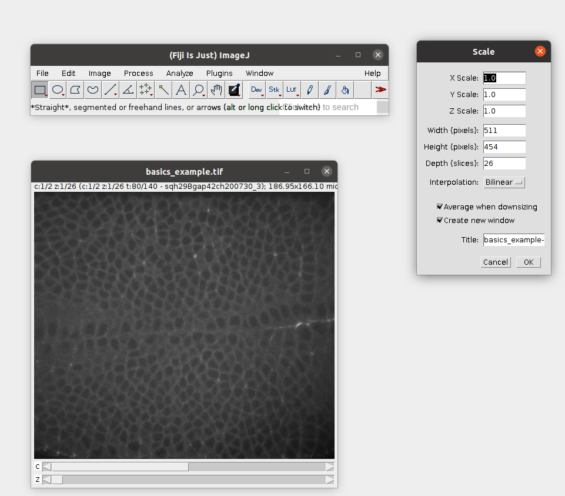
Then save the result as a .h5 file. This will allow Ilastik to work much more efficiently in the next step: File -> Save as -> HD5. Let’s call the result basics_example_subsampled.h5.
Python version
Let’s start by loading the relavant python libraries
import numpy as np
from skimage import transform
import matplotlib.pyplot as plt# start by entering the filename
metadata_dict = {'filename': 'ilastik_example/basics_example'}image = tcio.adjust_axis_order(tcio.imread(f"{metadata_dict['filename']}.tif"))
print("image shape:", image.shape)image shape: (2, 26, 454, 511)Resolution info and subsampling
From the image shape, we can see that the spatial axes are in \(z-x-y\) order. We use this information to correctly enter the resolution in microns/pixel for each axis. You can typically get this info from the .tif metadata. We then subsample the image for rapid segmentation. This will greatly speed up the segmentation process. It is usually a good idea to make the subsampled image approximately isotropic. Subsample so much that the geometry of your object of interest is still visible (i.e. curvature and/or wrinkles in your surface).
metadata_dict['resolution_in_microns'] = (1, 0.36, 0.36)
metadata_dict['subsampling_factors'] = (1, 1/3, 1/3)# let's plot the data in a cross section
plt.imshow(image[1,:,:,250],
aspect=metadata_dict['resolution_in_microns'][0]/metadata_dict['resolution_in_microns'][1])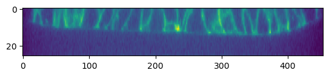
subsampled_image = transform.rescale(image, metadata_dict['subsampling_factors'],
channel_axis=0, preserve_range=True)
print("subsampled image shape:", subsampled_image.shape)subsampled image shape: (2, 26, 151, 170)We now save the subsampled image as a .h5 file for input into ilastik for segmentation. .h5 files are faster to read for ilastik and perform much better than .tif’s.
tcio.write_h5(f"{metadata_dict['filename']}_subsampled.h5", subsampled_image, axis_order="CZYX")Create 3d segmentation
We now use ilastik binary pixel classification.
Start Ilastik, and select binary pixel classification:
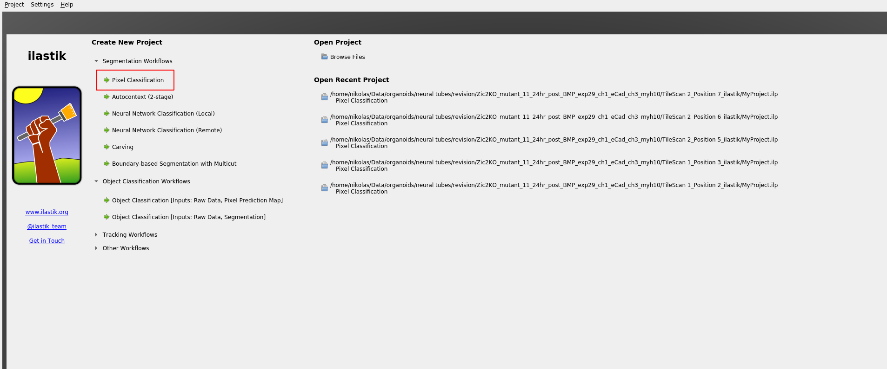
Save the project .ilp file to the ilastik_example directory.
Now let’s add the dataset:
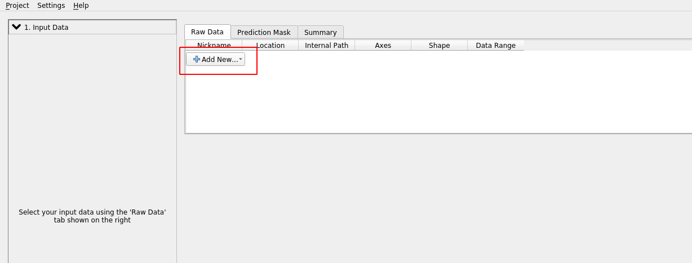
Click “add separate images” and select basics_example_subsampled.h5 from the ilastik_example directory.
Attention: Axis order
Ilastik does not always know what the axes in your input data mean. The axis_order argument in tcio.write_h5 allows you to write the axis order into the .h5 file. If, nevertheless, ilastik thinks the “channel” axis is the “z” axis, we can fix it as follows. “Right click” on the dataset and “edit properties”:
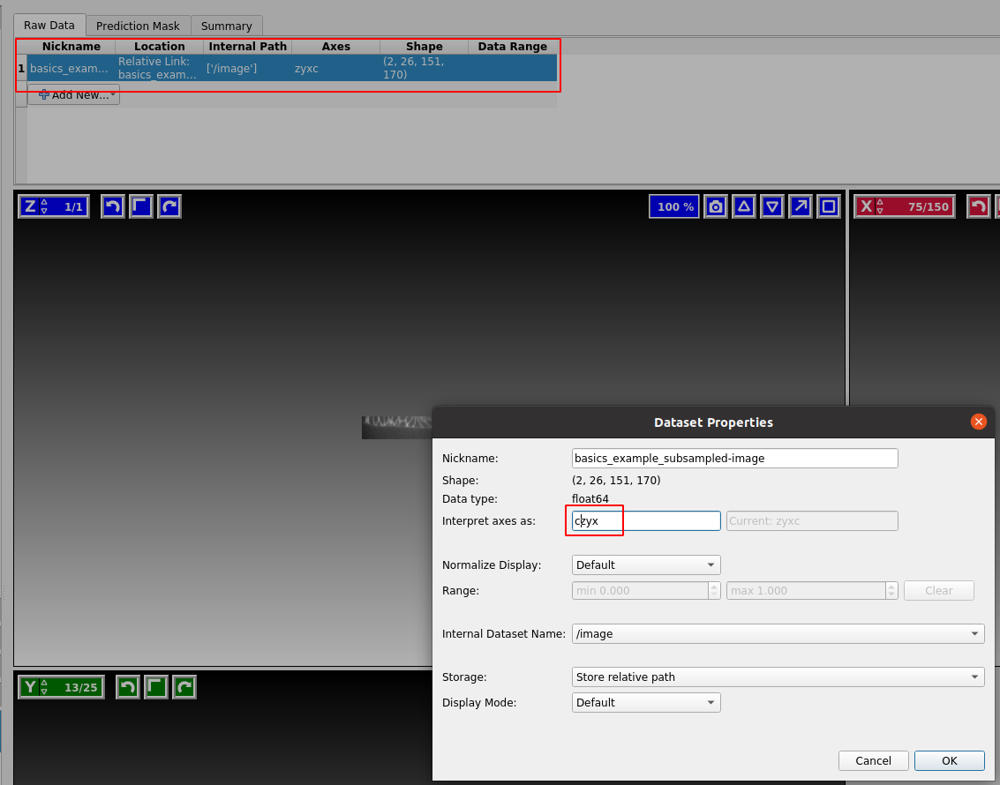
Our dataset is in CZYX order (where C=channel). By convention, blender_tissue_cartography always puts the channel as the first axis. Ilastik should show you three cross-sections of your data in red/green color.
Click on “Feature selection” on the left toolbar to continue.
Feature selection
Ilastik internally works by applying a bunch of different image filters (like smoothing, or edge detection) to your data, and using the results as input for a machine-learning model. You now select which filters (“Features”) you want. In general, it is safe to just select everything. If you get an error, it may be the case that the size of the filter is bigger than the smallest axis (e.g. the \(z\)-axis) in your image. In this case, click the top bar to make the filter “2d”:
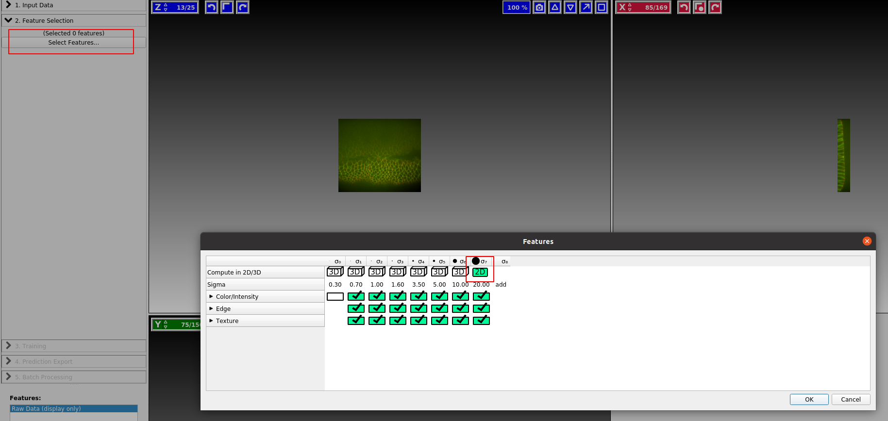
Training
We now continue to “Training”. Zoom in to one of the cross sections, and paint the “inside” of the sample in yellow, and the “outside” in blue. You can also add more labels, but here we will just need two. You just need to make a few brush strokes and ilastik will start making predictions. Click the “Live Update” button:
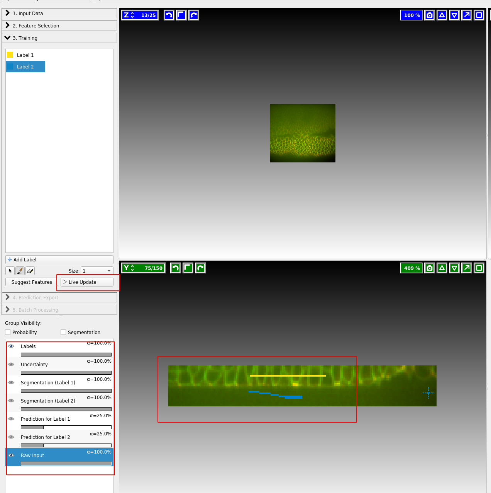
On the left, you can adjust the lookup table for your data, and decide what features of the prediction you want to see. I find it very helpful to look at “Uncertainty” which shows you in light blue where the algorithm is still unsure:
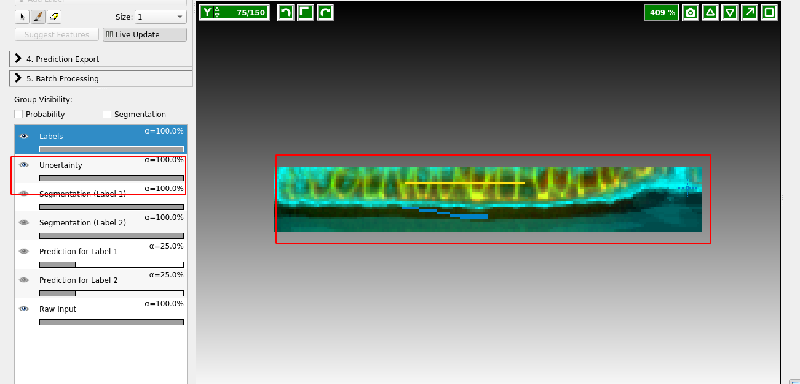
Now paint more labels until you are happy with the classification. Target the regions of high uncertainty, and look in all three cross sections. It is important that the classification boundary tightly matches the surface you want to extract!
Prediction Export
Once you are happy with the results, let’s go to “Prediction Export” on the left toolbar. Use “Source: Probabilities” and click “export all”:
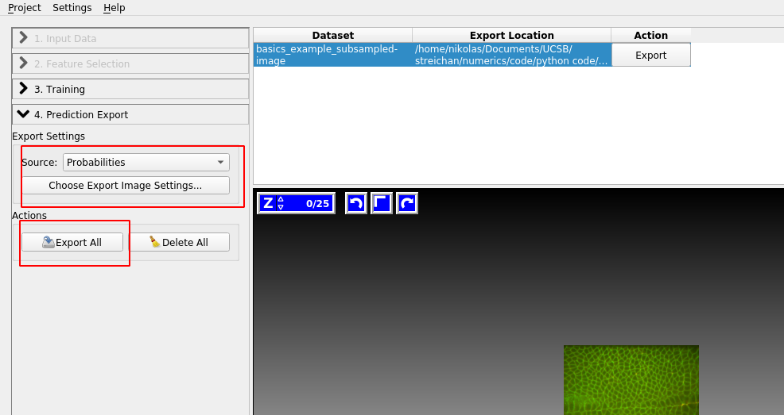
You can adjust the axis order and output format under “Choose Export Image Settings” if you need.
Batch processing
You can apply the Ilastik model to multiple datasets, using the “Batch Processing” tab on the left toolbar. In general, I recommend doing this only for datasets that are highly “comparable”, e.g. recorded with exactly the same microscopy settings. Since it’s fairly easy and quick to train a new ilastik model for each dataset, trying to build a model that will work across all your recordings is often not worth it.
Attention: data normalization
If you plan on reusing the same model, it is recommended to normalize your data, so that the pixel values are always of the same approximate magnitude. Do this before you save the data as .h5’s, for example using the provided normalize_quantiles-function:
tcio.write_h5(f"{metadata_dict['filename']}_subsampled_normalized.h5",
tcio.normalize_quantiles(subsampled_image))Creating a mesh from the segmentation
The next step is to convert the segmentation of our sample into a mesh representing the surface of interest. If you are using the add-on version of blender_tissue_cartography, see tutorial 3, “Tissue cartography Blender add-on”. If you are using the Pyhton library, see below.
Loading segmentation into jupyter
After creating an ilastik project, training the model, and exporting the probabilities, we load the exported probabilities back into Python.
The resulting segmentation has two channels for the probability of a pixel being “inside” and “outside”.
segmentation = tcio.read_h5(f"{metadata_dict['filename']}_subsampled-image_Probabilities.h5")
segmentation = segmentation[0] # select the first channel of the segmentation - it's the probablity a pixel
# is part of the sample
print("segmentation shape:", segmentation.shape)segmentation shape: (26, 151, 170)# look at the segmentation in a cross section
plt.imshow(segmentation[:,:,50], vmin=0, vmax=1)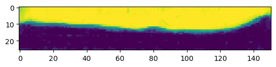
Computational post-processing
In our simple example, the segmentation story ends here, since the ilastik output already provides a great segmentation of our data. But we are not always so lucky, and sometimes extra processing is necessary.
I can recommend the scipy.ndimage module (for fixing holes, removing small erroneous “blobs” in your segmentation, etc.), and the morphsnakes package which works by computationally “inflating a balloon” at a seed point, with the ilastik probability output acting as a barrier. See this example, with the “balloon” in blue: 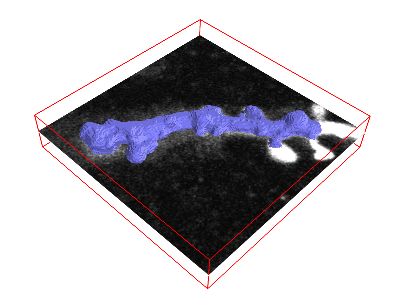 This is very helpful when your ilastik output defines the boundary of the object you want to segment, not its volume. The morphsnakes package is explained in tutorial 6.
Don’t worry if your segmentation contains some small errors. We can fix the resulting errors in the surface in blender’s graphical user interface in the next step.
Meshing
We can convert the segmentation into a triangular mesh using the marching cubes method, and save the mesh. We save all meshes in as wavefront .obj files (see wikipedia).
Important convention For sanities sake, we will always store all mesh coordinates in microns. This means rescaling appropriately after calculating the mesh from the 3d segmentation.
We then save the mesh to disk. In the next tutorial, we will load this mesh in the 3d software blender which is the heart of the tissue cartography pipeline
# now we create a 3d mesh of using the marching cubes method
vertices, faces = tcremesh.marching_cubes(segmentation, isovalue=0.5, sigma_smoothing=3)
# EXTREMELY IMPORTANT - we now rescale the vertex coordinates so that they are in microns.
vertices_in_microns = vertices * (np.array(metadata_dict['resolution_in_microns'])
/np.array(metadata_dict['subsampling_factors']))
mesh = tcmesh.ObjMesh(vertices_in_microns, faces)
mesh.name = "basics_example_mesh_marching_cubes"
mesh.write_obj(f"{metadata_dict['filename']}_mesh_marching_cubes.obj")Next steps
Now we will switch to blender to inspect our mesh and map it to the plane.